We created a realistic fluid simulation based on particle positions in C++ based off of this paper on Position Based Fluids by Macklin and Muller.
Our original project proposal can be seen here and a powerpoint version of our project report can be seen here.
We needed an efficient way to get the neighbors of a particular particle.
We used unordered_map in c++, which allows constant time access, to map a grid to a list of particles in that grid (hash grid). Each grid is defined by 3 coordinate values and for each particle, we would store it in the grid {floor(x/h), floor(y/h), floor(z/h)} where x, y, z are the coordinates of a particle and h is the kernel size parameter.Increasing the kernel size parameter would allow for more particles to be mapped to the same grid. Each grid would hash to a value floor(x/h) + 1300583*floor(y/h) + 105607*floor(z/h).
The neighbors of a certain particle will be contained in the 27 neighboring grids, including the grid that the particle maps to.
We could have used a big 3D array to store the grid, which would have been faster. However, this approach saves memory.
Enforcing incompressibility is the most important aspect of fluid simulation in order to make the simulation realistic.
In order to achieve this, we uses SPH and PBD solvers that we will go over more in detail below.
In order to maintain constant density, we set up density constraints for each particle as below:
|
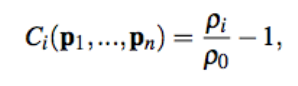
|
In the above formula, p1 through pn are the positions of neighboring particles found through the method in the neighboring particles grid structure section, p0 is rest density, which we defined to be 1000kg/m3, and pi is the density of the particle at i.
In order to find the density of the particle at i, we use smoothed particle hydrodynamics (SPH) estimators found by Monaghan in 1992, which is the formula below
|
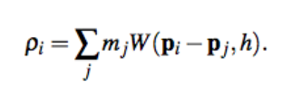
|
In the above formula, we are summing over all the neighbors of the particle i, ,mj is the mass of the neighboring particle which we defined to be equal to 1 to simplify calculations, h is the smoothing radius which we set to be equal to the kernel size (which is 0.14). Below is the function W, which is the smoothing kernel defined in Muller et al 2003.
|
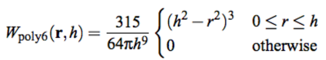
|
We use the smoothing kernel to solve for the density estimator.
|
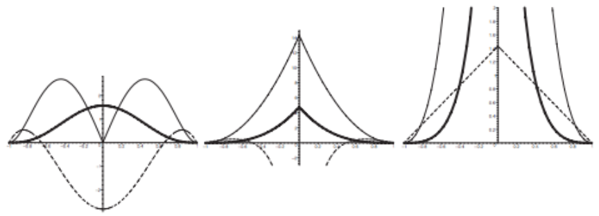
|
Notice how in the above image, the gradient of the smoothing kernel approaches zero at the center. Thus, if we use this kernel to calculate the pressure forces, particles will end up clumping due to the high pressure and the repulsion force vanishes since gradient is zero at the center. Thus we use the spiky kernel (which you can see in the above image to the right of the smoothing kernel) for pressure computations (aka gradient calculation) that we will mention below.
We integrate the density solver with position based dynamics (PBD) framework. The specific deriviation of how the density solver is integrated of the below formulas are mentioned in the Macklin and Muller 2003 paper. PBD is a non-linear constraint solver that is unconditionally stable. It tries to optimize the cost function below
|
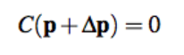
|
It attempts to find a delta p with the goal of making the density constraint zero. We solve this by using a series of Newton steps along the constraint gradient. For each constraint, we project particles along the constraint gradient and apply newton’s method to each constraint until it converges. A simple image demonstration of how this works from Macklin’s powerpoint slides is shown below.
|
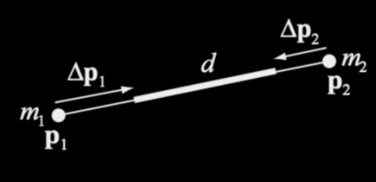
|
The actual formula to solve the density constraint is below, where we sum over the neighboring particles and the partial derivative of W is the spiky kernel mentioned above:
|
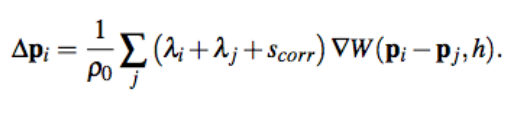
|
The spiky kernel, as mentioned above, is a modification of the smooth kernel, and is defined below:
|
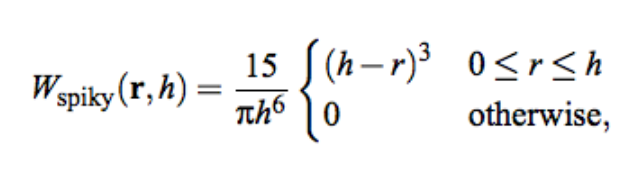
|
The lambdas are a scaling factor that are defined as such, where epsilon is a user defined relaxation parameter that we set to be 10,000:
|
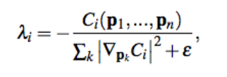
|
Partial derivative of the constraint is defined as such:
|
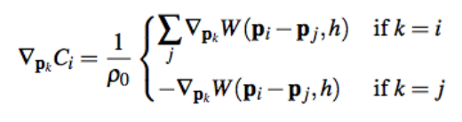
|
In our implementation, we experienced clumping of particles, which is the result of negative pressure when particle does not have enough neighbors to satisfy to SPH density constraint since SPH requires a minimum number of neighbor. As a result, the particles pull each other together to reach rest density and satisfy the constraint.
In order to counter this, we added artificial pressure to the calculation of position delta in order to add a small repulsive force to create surface tension.
The artificial pressure is defined in terms of the smoothing kernel as below:
|
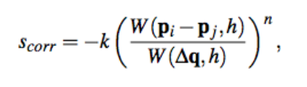
|
We defined magnitude of delta q to be 0.1 * the kernel size and k to be 0.001 and n to be 4 as mentioned in the paper. Take note back to the scorr in the formula to solve the density constraint above.
You will see in the results the effect the artificial pressure has on our demo.
For collision detect, we made it very simple. We set the position to the boundary coordinate if it is greater than or equal to the coordinate, and the velocity gets modified through the formula mentioned below. So if a coordinate is at the boundary of y = -1, we just set the position's y to be -1.
Note how we only update the variable new position variable "newp" and not the original position "p" until the final step when we set the old position to "new position". Also, we set dt to be 0.001. Smaller time steps lead to less clumping of particles, even though it makes the rendering slower.
Here are the videos of our demo’s of our program working.
10x10x10 without artificial pressureDescription: This is the case of our program running without artificial pressure. Notice that there is a lot more splashing and there is less surface tension.
10x10x10 with artificial pressure with relaxation parameter 10000Description: This is the case of our program running without artificial pressure. Notice that there the particles tend to stick together more, drastically reducing the splashing effect from the case without artificial pressure because of the repulsive force added in by scorr.
10x10x10 with artificial pressure with relaxation parameter 100000Description: This is the case of our program running with artificial pressure but with a higher relaxation parameter. There is more splashing than the case with a lower relaxation parameter, but a lot less than the case without artificial pressure. This is one case where tuning a parameter will affect our results.
We also attempted optimizations such as OpenMP in the bottleneck sections of our program, to make our program faster, but there was no noticeable speedup in our program. A good way to expand on this project would to make it run faster through more utilizations of multi-threaded computing and GPU through CUDA to store the hash structure. Also, a good addition would be to produce a better rendering of the fluids to look more like water instead of just spherical objects.
Paper on Position Based Fluids by Macklin and Muller
Slides on Position Based Fluids by Macklin to accompany the paper above
John Choi - Implemented the hash grid structure to find neighbors of a particle efficiently and helped debug the project overall.
Angela Ko - Implemented the SPH density estimator, PBD solver, and helped debug the project overall.